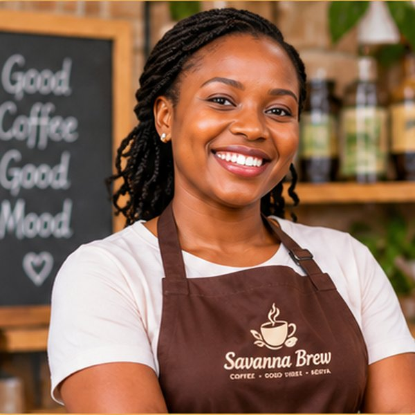

Our Story
Savanna Brew Café opened in 2019 with one small espresso machine and a big dream: to celebrate Kenyan coffee. Founder Amina Otieno grew up on her grandparents' coffee farm in Nyeri and wanted to bring that flavour to the city. Today the café supports local farmers, uses eco-friendly packaging and hosts community events every month.
Every cup we serve is a thank-you to the farmers who grew it.
Our Values
- QualityOnly freshly roasted, single-origin Kenyan beans.
- CommunityFair prices for farmers and a welcoming space for all.
- SustainabilityCompostable cups and zero-waste pastries.